A pointer is a variable that contains the address of a variable. Pointers are much used in C, partly because they are sometimes the only way to express a computation, and partly because they usually lead to more compact and efficient code than can be obtained in other ways. Pointers and arrays are closely related; this chapter also explores this relationship and shows how to exploit it.
指针是一个存放变量地址的变量。指针在 C 中使用非常频繁，部分原因在于有时它们是表达某种计算的唯一途径，另一部分原因在于它们通常能产生比其他方法更紧凑、更高效的代码。指针和数组密切相关；本章将探讨这种关系，并展示如何利用它。
Pointers have been lumped with the goto statement as a marvelous way to create impossibleto-understand programs. This is certainly true when they are used carelessly, and it is easy to create pointers that point somewhere unexpected. With discipline, however, pointers can also be used to achieve clarity and simplicity. This is the aspect that we will try to illustrate.
指针曾与 goto 语句一起被归为制造令人无法理解的程序的绝妙手段。当指针被草率使用时确实如此，而且很容易创建出指向意料之外位置的指针。但只要遵守规范，指针也可以用来达到清晰和简洁。这正是我们要努力展示的方面。
The main change in ANSI C is to make explicit the rules about how pointers can be manipulated, in effect mandating what good programmers already practice and good compilers already enforce. In addition, the type void * (pointer to void) replaces char * as the proper type for a generic pointer.
ANSI C 的主要变化是把如何操纵指针的规则明确下来，实际上就是把优秀程序员已经在实践、优秀编译器已经在执行的规则定为强制要求。另外，void （指向 void 的指针）类型取代 char ，成为通用指针的恰当类型。
Let us begin with a simplified picture of how memory is organized. A typical machine has an array of consecutively numbered or addressed memory cells that may be manipulated individually or in contiguous groups. One common situation is that any byte can be a char, a pair of one-byte cells can be treated as a short integer, and four adjacent bytes form a long. A pointer is a group of cells (often two or four) that can hold an address. So if c is a char and p is a pointer that points to it, we could represent the situation this way:
我们先从内存组织的简化图景开始。一台典型的机器有一组连续编号或编址的内存单元，可以单独操纵它们，也可以按连续成组的方式操纵。一种常见情形是：任何一个字节都可以是一个 char，一对单字节单元可以当作一个 short 整数，而四个相邻的字节构成一个 long。指针是这样一组单元（通常为两个或四个），它可以存放一个地址。因此，如果 c 是一个 char，p 是指向它的指针，我们可以把这种情形表示如下：
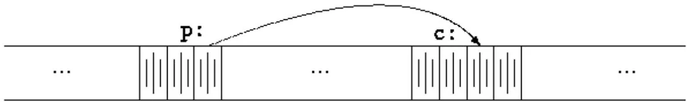
The unary operator & gives the address of an object, so the statement
一元运算符 & 给出对象的地址，因此语句
p = &c;
assigns the address of c to the variable p, and p is said to "point to" c. The & operator only applies to objects in memory: variables and array elements. It cannot be applied to expressions, constants, or register variables.
把 c 的地址赋给变量 p，我们说 p “指向” c。& 运算符只适用于内存中的对象：变量和数组元素。它不能作用于表达式、常量或 register 变量。
The unary operator * is the indirection or dereferencing operator; when applied to a pointer, it accesses the object the pointer points to. Suppose that x and y are integers and ip is a pointer to int. This artificial sequence shows how to declare a pointer and how to use & and *:
一元运算符 * 是间接寻址（indirection）或解引用（dereferencing）运算符；把它用于指针时，它访问指针所指向的对象。假设 x 和 y 是整数，ip 是指向 int 的指针。下面这个人造的序列展示了如何声明一个指针以及如何使用 & 和 *：
int x = 1, y = 2, z[10];
int *ip; /* ip is a pointer to int */
ip = &x; /* ip now points to x */
y = *ip; /* y is now 1 */
*ip = 0; /* x is now 0 */
ip = &z[0]; /* ip now points to z[0] */
The declaration of x, y, and z are what we've seen all along. The declaration of the pointer ip,
x、y 和 z 的声明我们一直都在见。而指针 ip 的声明
int *ip;
is intended as a mnemonic; it says that the expression *ip is an int. The syntax of the declaration for a variable mimics the syntax of expressions in which the variable might appear. This reasoning applies to function declarations as well. For example,
这种写法是一种助记手段；它表明表达式 *ip 是一个 int。变量的声明语法模仿了该变量可能出现的表达式的语法。这种推理方式也适用于函数声明。例如
double *dp, atof(char *);
says that in an expression *dp and atof(s) have values of double, and that the argument of atof is a pointer to char.
表明在表达式中 *dp 和 atof(s) 的值是 double 类型，并且 atof 的参数是一个指向 char 的指针。
You should also note the implication that a pointer is constrained to point to a particular kind of object: every pointer points to a specific data type. (There is one exception: a "pointer to void" is used to hold any type of pointer but cannot be dereferenced itself. We'll come back to it in Section 5.11.)
你还应当注意到这样一个含义：指针被约束为只能指向某种特定类型的对象；每个指针都指向一个具体的数据类型。（有一个例外：“指向 void 的指针”可以存放任何类型的指针，但它自身不能被解引用。我们将在 5.11 节再回到这个话题。）
If ip points to the integer x, then *ip can occur in any context where x could, so
如果 ip 指向整数 x，那么 *ip 可以出现在任何 x 能出现的地方，因此
*ip = *ip + 10;
increments $^{*}$ ip by 10.
把 *ip 增加 10。
The unary operators * and & bind more tightly than arithmetic operators, so the assignment
y = *ip + 1
takes whatever ip points at, adds 1, and assigns the result to y, while
取出 ip 所指向的对象，加 1，并把结果赋给 y；而
*ip += 1
increments what ip points to, as do
把 ip 所指向的对象增加 1，以下两种写法也是如此：
++*ip
and
(*ip)++
The parentheses are necessary in this last example; without them, the expression would increment ip instead of what it points to, because unary operators like * and ++ associate right to left.
最后一个例子中的圆括号是必需的；如果没有它们，这个表达式将会使 ip 本身增加，而不是使它所指向的对象增加，因为像 * 和 ++ 这样的一元运算符是从右向左结合的。
Finally, since pointers are variables, they can be used without dereferencing. For example, if iq is another pointer to int,
最后，由于指针本身也是变量，它们可以不经解引用而直接使用。例如，如果 iq 是另一个指向 int 的指针，那么
iq = ip
copies the contents of ip into iq, thus making iq point to whatever ip pointed to.
把 ip 的内容复制到 iq 中，从而使 iq 指向 ip 所指向的地方。
Since C passes arguments to functions by value, there is no direct way for the called function to alter a variable in the calling function. For instance, a sorting routine might exchange two out-of-order arguments with a function called swap. It is not enough to write
由于 C 以传值方式（by value）把参数传给函数，被调用函数没有办法直接改变调用函数中的变量。例如，一个排序例程可能需要用一个名为 swap 的函数来交换两个次序不对的元素。仅仅写成这样是不够的
swap(a, b);
where the swap function is defined as
其中 swap 函数定义如下
void swap(int x, int y) /* WRONG */
{
int temp;
temp = x;
x = y;
y = temp;
}
Because of call by value, swap can't affect the arguments a and b in the routine that called it. The function above swaps copies of a and b.
由于传值调用，swap 无法影响调用它的例程中的参数 a 和 b。上面的函数交换的只是 a 和 b 的副本。
The way to obtain the desired effect is for the calling program to pass pointers to the values to be changed:
要得到想要的效果，调用程序应该把指向待改变值的指针传给函数：
Since the operator & produces the address of a variable, &a is a pointer to a. In swap itself, the parameters are declared as pointers, and the operands are accessed indirectly through them.
由于 & 运算符产生变量的地址，&a 就是指向 a 的指针。在 swap 自身中，参数被声明为指针，操作数通过它们间接访问。
void swap(int *px, int *py) /* interchange *px and *py */
{
int temp;
temp = *px;
*px = *py;
*py = temp;
}
Pictorially:
图示如下：
in caller:
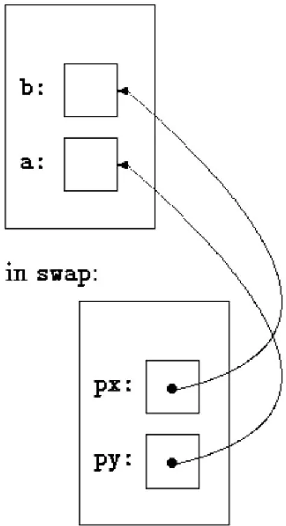
Pointer arguments enable a function to access and change objects in the function that called it. As an example, consider a function getint that performs free-format input conversion by breaking a stream of characters into integer values, one integer per call. getint has to return the value it found and also signal end of file when there is no more input. These values have to be passed back by separate paths, for no matter what value is used for EOF, that could also be the value of an input integer.
指针参数使得函数能够访问并修改调用它的函数中的对象。作为一个例子，考虑一个函数 getint，它执行自由格式的输入转换：把一个字符流分解成整数值，每次调用得到一个整数。getint 必须返回它找到的值，并且在没有更多输入时发出文件结束的信号。这些值必须通过分开的途径返回，因为无论用什么值表示 EOF，它都可能同时是某个输入整数的值。
One solution is to have getint return the end of file status as its function value, while using a pointer argument to store the converted integer back in the calling function. This is the scheme used by scanf as well; see Section 7.4.
一种解决办法是让 getint 以函数值返回文件结束状态，同时用一个指针参数把转换后的整数存回调用函数中。scanf 用的也是这个方案；参见 7.4 节。
The following loop fills an array with integers by calls to getint:
下面的循环通过调用 getint 用整数填充一个数组：
int n, array[SIZE], getint(int *);
for (n = 0; n < SIZE && getint(&array[n]) != EOF; n++)
;
Each call sets array[n] to the next integer found in the input and increments n. Notice that it is essential to pass the address of array[n] to getint. Otherwise there is no way for getint to communicate the converted integer back to the caller.
每次调用都把 array[n] 设置为在输入中找到的下一个整数，并把 n 增加 1。注意，必须把 array[n] 的地址传给 getint，这是至关重要的。否则，getint 就没有办法把转换后的整数传回给调用者。
Our version of getint returns EOF for end of file, zero if the next input is not a number, and a positive value if the input contains a valid number.
我们这个版本的 getint 在文件结束时返回 EOF；如果下一个输入不是数字则返回零；如果输入含有有效数字则返回正值。
int getch(void);
void ungetch(int);
/* getint: get next integer from input into *pn */
int getint(int *pn)
{
int c, sign;
while (isspace(c = getch())) /* skip white space */
;
if (!isdigit(c) && c != EOF && c != '+' && c != '-' ) {
ungetch(c); /* it is not a number */
return 0;
}
sign = (c == '-' ) ? -1 : 1;
if (c == '+' || c == '-' )
c = getch();
for (*pn = 0; isdigit(c), c = getch())
*pn = 10 * *pn + (c - '0');
*pn *= sign;
if (c != EOF)
ungetch(c);
return c;
}
Throughout getint, *pn is used as an ordinary int variable. We have also used getch and ungetch (described in Section 4.3) so the one extra character that must be read can be pushed back onto the input.
在整个 getint 中，*pn 被当作一个普通的 int 变量使用。我们还使用了 getch 和 ungetch（在 4.3 节描述），这样必须多读的那个字符就可以被压回到输入中。
Exercise 5-1. As written, getint treats a + or - not followed by a digit as a valid representation of zero. Fix it to push such a character back on the input.
练习 5-1. 按现在这样写，getint 会把后面不跟数字的 + 或 - 当作零的合法表示。请修改它，把这样的字符压回到输入中。
Exercise 5-2. Write getfloat, the floating-point analog of getint. What type does getfloat return as its function value?
练习 5-2. 编写 getfloat，它是 getint 的浮点数版本。getfloat 作为函数值应返回什么类型？
In C, there is a strong relationship between pointers and arrays, strong enough that pointers and arrays should be discussed simultaneously. Any operation that can be achieved by array subscripting can also be done with pointers. The pointer version will in general be faster but, at least to the uninitiated, somewhat harder to understand.
在 C 中，指针和数组之间有很强的关系，强到必须把指针和数组放在一起讨论。凡是能用数组下标完成的操作，也都能用指针完成。指针版本一般来说会更快，但至少对初学者来说，多少更难理解一些。
The declaration
声明
int a[10];
defines an array of size 10, that is, a block of 10 consecutive objects named a[0], a[1], ...,a[9].
定义了一个大小为 10 的数组，也就是一个由 a[0]、a[1]、...、a[9] 这 10 个连续对象组成的块。
| a: | |||||||||
| a[0] a[1] | a[9] | ||||||||
The notation a[i] refers to the i-th element of the array. If pa is a pointer to an integer, declared as
记号 a[i] 表示数组的第 i 个元素。如果 pa 是一个指向整数的指针，声明为
int *pa;
then the assignment
那么赋值语句
pa = &a[0];
sets pa to point to element zero of a; that is, pa contains the address of a[0].
把 pa 设置为指向 a 的第 0 号元素；也就是说，pa 包含 a[0] 的地址。
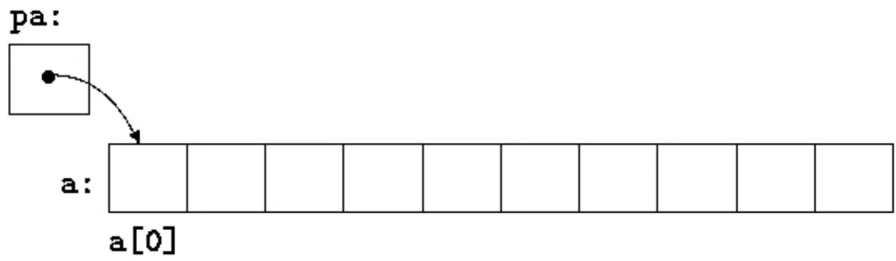
Now the assignment
现在，赋值语句
x = *pa;
will copy the contents of a[0] into x.
将把 a[0] 的内容复制到 x 中。
If pa points to a particular element of an array, then by definition pa+1 points to the next element, pa+i points i elements after pa, and pa-i points i elements before. Thus, if pa points to a[0],
如果 pa 指向数组的某个特定元素，那么根据定义，pa+1 指向下一个元素，pa+i 指向 pa 之后第 i 个元素，pa-i 指向 pa 之前第 i 个元素。因此，如果 pa 指向 a[0]，那么
*(pa+1)
refers to the contents of a[1], pa+i is the address of a[i], and *(pa+i) is the contents of a[i].
引用的是 a[1] 的内容；pa+i 是 a[i] 的地址；而 *(pa+i) 是 a[i] 的内容。
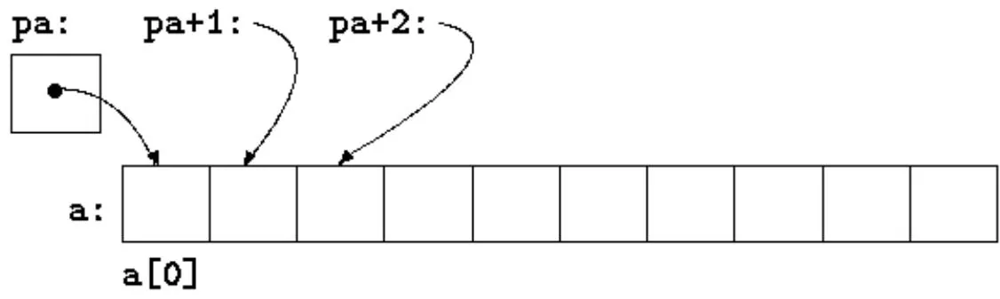
These remarks are true regardless of the type or size of the variables in the array a. The meaning of "adding 1 to a pointer," and by extension, all pointer arithmetic, is that pa+1 points to the next object, and pa+i points to the i-th object beyond pa.
以上这些论述对数组 a 中变量无论什么类型、什么大小都成立。“给指针加 1”的含义（推而广之，所有指针算术）是：pa+1 指向下一个对象，pa+i 指向 pa 之后的第 i 个对象。
The correspondence between indexing and pointer arithmetic is very close. By definition, the value of a variable or expression of type array is the address of element zero of the array. Thus after the assignment
下标和指针算术之间的对应关系非常紧密。根据定义，数组类型的变量或表达式的值是数组第 0 号元素的地址。因此，在执行赋值语句
pa = a;
pa and a have identical values. Since the name of an array is a synonym for the location of the initial element, the assignment pa=&a[0] can also be written as
之后，pa 和 a 具有相同的值。由于数组名是数组首元素位置的同义词，赋值 pa=&a[0] 也可以写成
pa = a;
Rather more surprising, at first sight, is the fact that a reference to a[i] can also be written as (a+i). In evaluating a[i], C converts it to (a+i) immediately; the two forms are equivalent. Applying the operator & to both parts of this equivalence, it follows that &a[i] and a+i are also identical: a+i is the address of the i-th element beyond a. As the other side of this coin, if pa is a pointer, expressions might use it with a subscript; pa[i] is identical to *(pa+i). In short, an array-and-index expression is equivalent to one written as a pointer and offset.
初看起来，更令人吃惊的是这样一个事实：对 a[i] 的引用也可以写成 (a+i)。在求 a[i] 的值时，C 立即将其转换为 (a+i)；这两种形式是等价的。对这个等价关系的两部分都应用 & 运算符，可以得到 &a[i] 与 a+i 也是相同的：a+i 是 a 之后第 i 个元素的地址。反过来看，如果 pa 是指针，表达式可以对它使用下标：pa[i] 与 *(pa+i) 相同。简而言之，数组加下标的表达式等价于写成指针加偏移量的形式。
There is one difference between an array name and a pointer that must be kept in mind. A pointer is a variable, so pa=a and pa++ are legal. But an array name is not a variable; constructions like a=pa and a++ are illegal.
数组名和指针之间有一个必须牢记的区别。指针是一个变量，所以 pa=a 和 pa++ 都是合法的。但数组名不是变量；像 a=pa 和 a++ 这样的写法是非法的。
When an array name is passed to a function, what is passed is the location of the initial element. Within the called function, this argument is a local variable, and so an array name parameter is a pointer, that is, a variable containing an address. We can use this fact to write another version of strlen, which computes the length of a string.
当把数组名传给函数时，传递的是首元素的位置。在被调用的函数内部，这个参数是一个局部变量，因此数组名参数其实是一个指针，也就是一个存放地址的变量。我们可以利用这一点来编写另一个版本的 strlen，它计算字符串的长度。
/* strlen: return length of string s */
int strlen(char *s)
{
int n;
for (n = 0; *s != '\0', s++)
n++;
return n;
}
Since s is a pointer, incrementing it is perfectly legal; s++ has no effect on the character string in the function that called strlen, but merely increments strlen's private copy of the pointer. That means that calls like
由于 s 是指针，对它做自增是完全合法的；s++ 对调用 strlen 的函数中的字符串没有任何影响，只是增加 strlen 私有的那个指针副本。这意味着像下面这样的调用都是可行的：
strlen("hello, world"); /* string constant */
strlen(array); /* char array[100]; */
strlen(ptr); /* char *ptr; */
all work.
它们都能正常工作。
As formal parameters in a function definition,
作为函数定义中的形参，
char s[];
and
和
char *s;
are equivalent; we prefer the latter because it says more explicitly that the variable is a pointer. When an array name is passed to a function, the function can at its convenience believe that it has been handed either an array or a pointer, and manipulate it accordingly. It can even use both notations if it seems appropriate and clear.
是等价的；我们更喜欢后者，因为它更明确地表明这个变量是一个指针。当数组名被传给函数时，函数可以根据自己的方便，认为交给它的要么是数组要么是指针，并相应地操纵它。如果看起来合适且清晰，它甚至可以两种记号并用。
It is possible to pass part of an array to a function, by passing a pointer to the beginning of the subarray. For example, if a is an array,
也可以把数组的一部分传给函数，方法是传一个指向子数组开头的指针。例如，如果 a 是一个数组，那么
f(&a[2])
and
和
f(a+2)
both pass to the function f the address of the subarray that starts at a[2]. Within f, the parameter declaration can read
都会把从 a[2] 开始的子数组的地址传给函数 f。在 f 内部，参数声明可以写成
f(int arr[]) { ... }
or
或
f(int *arr) { ... }
So as far as f is concerned, the fact that the parameter refers to part of a larger array is of no consequence.
因此，对 f 来说，参数引用的是更大数组的一部分这一事实没有任何影响。
If one is sure that the elements exist, it is also possible to index backwards in an array; p[-1], p[-2], and so on are syntactically legal, and refer to the elements that immediately precede p[0]. Of course, it is illegal to refer to objects that are not within the array bounds.
如果确定这些元素存在，也可以在数组中向后索引；p[-1]、p[-2] 等在语法上都是合法的，它们引用紧挨着 p[0] 之前的元素。当然，引用不在数组边界之内的对象是非法的。
If p is a pointer to some element of an array, then p++ increments p to point to the next element, and p+=i increments it to point i elements beyond where it currently does. These and similar constructions are the simples forms of pointer or address arithmetic.
如果 p 是指向数组某个元素的指针，那么 p++ 使 p 指向下一个元素，p+=i 使它指向当前位置之后第 i 个元素。这些以及类似的构造是指针或地址算术的最简单形式。
C is consistent and regular in its approach to address arithmetic; its integration of pointers, arrays, and address arithmetic is one of the strengths of the language. Let us illustrate by writing a rudimentary storage allocator. There are two routines. The first, alloc(n), returns a pointer to n consecutive character positions, which can be used by the caller of alloc for storing characters. The second, afree(p), releases the storage thus acquired so it can be reused later. The routines are "rudimentary" because the calls to afree must be made in the opposite order to the calls made on alloc. That is, the storage managed by alloc and afree is a stack, or last-in, first-out. The standard library provides analogous functions called malloc and free that have no such restrictions; in Section 8.7 we will show how they can be implemented.
C 在处理地址算术时是一致而有规律的；它把指针、数组和地址算术紧密地结合在一起，这是这门语言的强项之一。我们来编写一个简陋的存储分配器来说明。有两个例程。第一个是 alloc(n)，它返回一个指向 n 个连续字符位置的指针，alloc 的调用者可以用它来存放字符。第二个是 afree(p)，它释放这样获得的存储空间，以便以后重用。说这两个例程“简陋”，是因为对 afree 的调用必须以与对 alloc 的调用相反的顺序进行。也就是说，由 alloc 和 afree 管理的存储是一个栈，即后进先出。标准库提供了没有这种限制的类似函数 malloc 和 free；在 8.7 节我们将展示它们是如何实现的。
The easiest implementation is to have alloc hand out pieces of a large character array that we will call allocbuf. This array is private to alloc and afree. Since they deal in pointers, not array indices, no other routine need know the name of the array, which can be declared static in the source file containing alloc and afree, and thus be invisible outside it. In practical implementations, the array may well not even have a name; it might instead be obtained by calling malloc or by asking the operating system for a pointer to some unnamed block of storage.
最简单的实现是让 alloc 从一个大的字符数组中分发片段，我们把这个数组称为 allocbuf。这个数组是 alloc 和 afree 私有的。由于它们处理的是指针而不是数组下标，其他例程不需要知道这个数组的名字；该数组可以在包含 alloc 和 afree 的源文件中声明为 static，因而在外部不可见。在实际的实现中，这个数组甚至可能根本没有名字；它可以通过调用 malloc 获得，或者通过向操作系统请求一个指向某个无名存储块的指针来获得。
The other information needed is how much of allocbuf has been used. We use a pointer, called allocp, that points to the next free element. When alloc is asked for n characters, it checks to see if there is enough room left in allocbuf. If so, alloc returns the current value of allocp (i.e., the beginning of the free block), then increments it by n to point to the next free area. If there is no room, alloc returns zero. afree(p) merely sets allocp to p if p is inside allocbuf.
需要的另一个信息是 allocbuf 已使用了多少。我们使用一个名为 allocp 的指针，它指向下一个空闲元素。当 alloc 被要求提供 n 个字符时，它检查 allocbuf 中是否还有足够的空间。如果有，alloc 返回 allocp 的当前值（即空闲块的开头），然后把它增加 n，指向下一个空闲区域。如果没有空间，alloc 返回零。afree(p) 只是在 p 位于 allocbuf 内时把 allocp 设置为 p。
static char *allocp = allocbuf;
before call to alloc:
调用 alloc 之前：
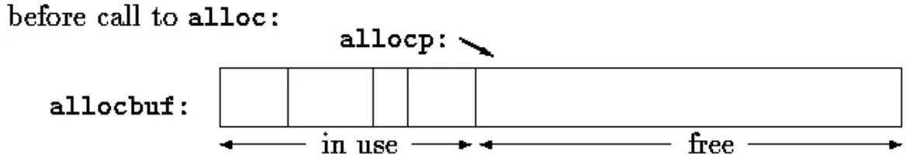
after call to alloc:
调用 alloc 之后：
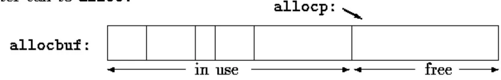
#define ALLOCSIZE 10000 /* size of available space */
static char allocbuf[ALLOCSIZE]; /* storage for alloc */
static char *allocp = allocbuf; /* next free position */
char *alloc(int n) /* return pointer to n characters */
{
if (allocbuf + ALLOCSIZE - allocp >= n) { /* it fits */
allocp += n;
return allocp - n; /* old p */
} else /* not enough room */
return 0;
}
void afree(char *p) /* free storage pointed to by p */
{
if (p >= allocbuf && p < allocbuf + ALLOCSIZE)
allocp = p;
}
In general a pointer can be initialized just as any other variable can, though normally the only meaningful values are zero or an expression involving the address of previously defined data of appropriate type. The declaration
一般而言，指针可以像任何其他变量一样初始化，尽管通常唯一有意义的值是零，或者是涉及先前定义的适当类型数据地址的表达式。声明
defines allocp to be a character pointer and initializes it to point to the beginning of allocbuf, which is the next free position when the program starts. This could also have been written
把 allocp 定义为一个字符指针，并将它初始化为指向 allocbuf 的开头——程序开始时这就是下一个空闲位置。这句也可以写成
static char *allocp = &allocbuf[0];
since the array name is the address of the zeroth element.
因为数组名就是第 0 号元素的地址。
The test
if (allocbuf + ALLOCSIZE - allocp >= n) { /* it fits */
checks if there's enough room to satisfy a request for n characters. If there is, the new value of allocp would be at most one beyond the end of allocbuf. If the request can be satisfied, alloc returns a pointer to the beginning of a block of characters (notice the declaration of the function itself). If not, alloc must return some signal that there is no space left. C guarantees that zero is never a valid address for data, so a return value of zero can be used to signal an abnormal event, in this case no space.
检查是否有足够的空间满足对 n 个字符的请求。如果有，allocp 的新值至多比 allocbuf 的末尾大出一格。如果请求能够满足，alloc 返回一个指向字符块开头的指针（注意函数自身的声明）。如果不能，alloc 必须返回某种表示已无剩余空间的信号。C 保证零永远不是数据的有效地址，所以返回值零可以用来表示异常事件，在本例中就是没有空间。
Pointers and integers are not interchangeable. Zero is the sole exception: the constant zero may be assigned to a pointer, and a pointer may be compared with the constant zero. The symbolic constant NULL is often used in place of zero, as a mnemonic to indicate more clearly that this is a special value for a pointer. NULL is defined in
指针和整数不可互换。零是唯一的例外：常量零可以赋给指针，指针也可以与常量零比较。符号常量 NULL 常常用作零的替代，作为一种助记手段，更清楚地表明这是指针的一个特殊值。NULL 定义在
Tests like
像下面这样的测试
if (allocbuf + ALLOCSIZE - allocp >= n) { /* it fits */
and
和
if (allocbuf + ALLOCSIZE - allocp >= n) { /* it fits */
if (p >= allocbuf && p < allocbuf + ALLOCSIZE)
show several important facets of pointer arithmetic. First, pointers may be compared under certain circumstances. If p and q point to members of the same array, then relations like ==, !=, <, >=, etc., work properly. For example,
展示了几种重要的指针算术特性。第一，在某些情况下指针可以进行比较。如果 p 和 q 指向同一个数组的成员，那么 ==、!=、<、>= 等关系运算都能正确工作。例如，
p < q
is true if p points to an earlier element of the array than q does. Any pointer can be meaningfully compared for equality or inequality with zero. But the behavior is undefined for arithmetic or comparisons with pointers that do not point to members of the same array. (There is one exception: the address of the first element past the end of an array can be used in pointer arithmetic.)
在 p 指向数组中比 q 更靠前的元素时为真。任何指针都可以与零进行相等或不等的比较有意义的比较。但是，对不指向同一数组成员的指针进行算术运算或比较，其行为是未定义的。（有一个例外：数组末尾之后第一个元素的地址可以用于指针算术。）
Second, we have already observed that a pointer and an integer may be added or subtracted. The construction
第二，我们已经观察到，指针和整数可以相加或相减。构造
p + n
means the address of the n-th object beyond the one p currently points to. This is true regardless of the kind of object p points to; n is scaled according to the size of the objects p points to, which is determined by the declaration of p. If an int is four bytes, for example, the int will be scaled by four.
表示 p 当前所指对象之后第 n 个对象的地址。无论 p 指向何种对象，这都是成立的；n 会根据 p 所指对象的大小进行缩放，而这一大小由 p 的声明决定。例如，如果一个 int 占 4 个字节，那么就会按 4 缩放。
Pointer subtraction is also valid: if p and q point to elements of the same array, and p<q, then q-p+1 is the number of elements from p to q inclusive. This fact can be used to write yet another version of strlen:
指针相减也是有效的：如果 p 和 q 指向同一个数组的元素，且 p<q，那么 q-p+1 就是从 p 到 q（含）的元素个数。利用这个事实可以写出另一个版本的 strlen：
/* strlen: return length of string s */
int strlen(char *s)
{
char *p = s;
while (*p != '\0')
p++;
return p - s;
}
In its declaration, p is initialized to s, that is, to point to the first character of the string. In the while loop, each character in turn is examined until the '\0' at the end is seen. Because p points to characters, p++ advances p to the next character each time, and p-s gives the number of characters advanced over, that is, the string length. (The number of characters in the string could be too large to store in an int. The header
在声明中，p 被初始化为 s，也就是指向字符串的第一个字符。在 while 循环中，依次检查每个字符，直到看到结尾的 '\0'。由于 p 指向字符，p++ 每次都使 p 前进到下一个字符，而 p-s 给出越过字符的个数，也就是字符串的长度。（字符串中的字符数可能大到无法存放在 int 中。头文件
Pointer arithmetic is consistent: if we had been dealing with floats, which occupy more storage that chars, and if p were a pointer to float, p++ would advance to the next float. Thus we could write another version of alloc that maintains floats instead of chars, merely by changing char to float throughout alloc and afree. All the pointer manipulations automatically take into account the size of the objects pointed to.
指针算术是一致的：如果我们处理的是 float（它比 char 占用更多存储空间），并且 p 是指向 float 的指针，那么 p++ 会前进到下一个 float。因此，只需在 alloc 和 afree 中把 char 改成 float，我们就可以写出另一个维护 float 而不是 char 的 alloc 版本。所有指针操作都会自动考虑所指对象的大小。
The valid pointer operations are assignment of pointers of the same type, adding or subtracting a pointer and an integer, subtracting or comparing two pointers to members of the same array, and assigning or comparing to zero. All other pointer arithmetic is illegal. It is not legal to add two pointers, or to multiply or divide or shift or mask them, or to add float or double to them, or even, except for void *, to assign a pointer of one type to a pointer of another type without a cast.
有效的指针操作包括：同类型指针之间的赋值、指针与整数的加减、指向同一数组成员的两个指针的相减或比较，以及与零的赋值或比较。所有其他指针算术都是非法的。把两个指针相加是不合法的，对指针做乘法、除法、移位、掩码运算也不合法，把 float 或 double 加到指针上同样不合法，甚至——除了 void * 之外——不做强制类型转换就把一种类型的指针赋给另一种类型的指针，也是不合法的。
A string constant, written as
字符串常量，写作
"I am a string"
is an array of characters. In the internal representation, the array is terminated with the null character '\0' so that programs can find the end. The length in storage is thus one more than the number of characters between the double quotes.
是一个字符数组。在内部表示中，数组以空字符 '\0' 结尾，这样程序就能找到它的末尾。存储的长度因此比双引号之间的字符数多一。
Perhaps the most common occurrence of string constants is as arguments to functions, as in
字符串常量最常出现的地方也许是作为函数的参数，比如
printf("hello, world\n");
When a character string like this appears in a program, access to it is through a character pointer; printf receives a pointer to the beginning of the character array. That is, a string constant is accessed by a pointer to its first element.
当这样的字符串出现在程序中时，对它的访问是通过一个字符指针进行的；printf 接收的是指向这个字符数组开头的指针。也就是说，字符串常量通过一个指向其第一个元素的指针来访问。
String constants need not be function arguments. If pmessage is declared as
字符串常量不一定是函数参数。如果 pmessage 被声明为
char *pmessage;
then the statement
那么语句
pmessage = "now is the time";
assigns to pmessage a pointer to the character array. This is not a string copy; only pointers are involved. C does not provide any operators for processing an entire string of characters as a unit.
把一个指向该字符数组的指针赋给 pmessage。这并不是字符串复制；其中只涉及指针。C 不提供任何把整个字符串当作一个单元来处理的运算符。
There is an important difference between these definitions:
下面这两个定义之间有着重要的区别：
char amessage[] = "now is the time"; /* an array */
char *pmessage = "now is the time"; /* a pointer */
amessage is an array, just big enough to hold the sequence of characters and '\0' that initializes it. Individual characters within the array may be changed but amessage will always refer to the same storage. On the other hand, pmessage is a pointer, initialized to point to a string constant; the pointer may subsequently be modified to point elsewhere, but the result is undefined if you try to modify the string contents.
amessage 是一个数组，其大小刚好足以容纳初始化它的字符序列和 '\0'。数组中的单个字符可以修改，但 amessage 将始终指向同一块存储。另一方面，pmessage 是一个指针，被初始化为指向一个字符串常量；这个指针随后可以被修改为指向别处，但如果你试图修改字符串的内容，结果是未定义的。
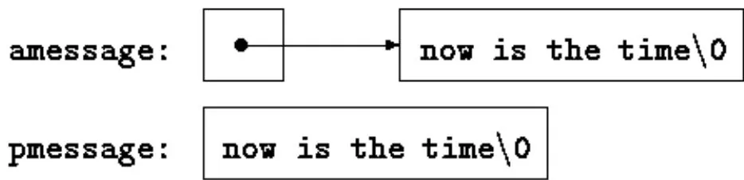
We will illustrate more aspects of pointers and arrays by studying versions of two useful functions adapted from the standard library. The first function is strcpy(s,t), which copies the string t to the string s. It would be nice just to say s=t but this copies the pointer, not the characters. To copy the characters, we need a loop. The array version first:
我们将通过研究两个从标准库改编而来的实用函数的版本来展示指针和数组的更多方面。第一个函数是 strcpy(s,t)，它把字符串 t 复制到字符串 s。要是能直接写 s=t 就好了，但这样复制的是指针而不是字符。要复制字符，需要一个循环。先看数组版本：
/* strcpy: copy t to s; array subscript version */
void strcpy(char *s, char *t)
{
int i;
i = 0;
while ((s[i] = t[i]) != '\0')
i++;
}
For contrast, here is a version of strcpy with pointers:
作为对比，下面是 strcpy 的指针版本：
/* strcpy: copy t to s; pointer version */
void strcpy(char *s, char *t)
{
int i;
i = 0;
while ((*s = *t) != '\0') {
s++;
t++;
}
}
Because arguments are passed by value, strcpy can use the parameters s and t in any way it pleases. Here they are conveniently initialized pointers, which are marched along the arrays a character at a time, until the '\0' that terminates t has been copied into s.
由于参数是按值传递的，strcpy 可以随意使用参数 s 和 t。在这里，它们是方便地初始化好的指针，沿着数组一次前进一个字符，直到结束 t 的 '\0' 被复制进 s。
In practice, strcpy would not be written as we showed it above. Experienced C programmers would prefer
实践中，strcpy 不会像我们上面展示的那样写。有经验的 C 程序员更喜欢
/* strcpy: copy t to s; pointer version 2 */
void strcpy(char *s, char *t)
{
while ((*s++ = *t++) != '\0')
;
}
This moves the increment of s and t into the test part of the loop. The value of *t++ is the character that t pointed to before t was incremented; the postfix ++ doesn't change t until after this character has been fetched. In the same way, the character is stored into the old s position before s is incremented. This character is also the value that is compared against '\0' to control the loop. The net effect is that characters are copied from t to s, up and including the terminating '\0'.
As the final abbreviation, observe that a comparison against '\0' is redundant, since the question is merely whether the expression is zero. So the function would likely be written as
作为最后一个简化，注意到与 '\0' 的比较是多余的，因为问题只是表达式是否为零。所以这个函数很可能写成
/* strcpy: copy t to s; pointer version 3 */
void strcpy(char *s, char *t)
{
while (*s++ = *t++)
;
}
Although this may seem cryptic at first sight, the notational convenience is considerable, and the idiom should be mastered, because you will see it frequently in C programs.
虽然初看起来这可能有些晦涩，但这种记号上的便利非常可观，而且应当掌握这个惯用法，因为你会在 C 程序中频繁见到它。
标准库（
The second routine that we will examine is strcmp(s,t), which compares the character strings s and t, and returns negative, zero or positive if s is lexicographically less than, equal to, or greater than t. The value is obtained by subtracting the characters at the first position where s and t disagree.
我们要考察的第二个例程是 strcmp(s,t)，它比较字符串 s 和 t，当 s 按字典序小于、等于或大于 t 时，分别返回负值、零或正值。返回值是通过在 s 和 t 第一次出现分歧的位置上把两个字符相减得到的。
/* strcmp: return <0 if s<t, 0 if s==t, >0 if s>t */
int strcmp(char *s, char *t)
{
int i;
for (i = 0; s[i] == t[i]; i++)
if (s[i] == '\0')
return 0;
return s[i] - t[i];
}
The pointer version of strcmp:
strcmp 的指针版本：
/* strcmp: return <0 if s<t, 0 if s==t, >0 if s>t */
int strcmp(char *s, char *t)
{
for ( ; *s == *t; s++, t++)
if (*s == '\0')
return 0;
return *s - *t;
}
Since ++ and -- are either prefix or postfix operators, other combinations of * and ++ and -- occur, although less frequently. For example,
由于 ++ 和 -- 既可以是前缀运算符也可以是后缀运算符，* 与 ++ 和 -- 的其他组合也会出现，虽然不那么频繁。例如
*--p
decrements p before fetching the character that p points to. In fact, the pair of expressions
在取出 p 所指向的字符之前先递减 p。实际上，这一对表达式
*p++ = val; /* push val onto stack */
val = *--p; /* pop top of stack into val */
are the standard idiom for pushing and popping a stack; see Section 4.3.
是入栈和出栈的标准惯用法；参见 4.3 节。
The header
头文件
Exercise 5-3. Write a pointer version of the function strcat that we showed in Chapter 2: strcat(s,t) copies the string t to the end of s.
练习 5-3. 用指针编写第 2 章展示过的函数 strcat 的版本：strcat(s,t) 把字符串 t 复制到 s 的末尾。
Exercise 5-4. Write the function strend(s,t), which returns 1 if the string t occurs at the end of the string s, and zero otherwise.
练习 5-4. 编写函数 strend(s,t)：如果字符串 t 出现在字符串 s 的末尾，返回 1，否则返回 0。
Exercise 5-5. Write versions of the library functions strncpy, strncat, and strncmp, which operate on at most the first n characters of their argument strings. For example, strncpy(s,t,n) copies at most n characters of t to s. Full descriptions are in Appendix B.
练习 5-5. 编写库函数 strncpy、strncat 和 strncmp 的版本，它们最多操作其参数字符串的前 n 个字符。例如，strncpy(s,t,n) 把 t 的最多 n 个字符复制到 s。完整的描述见附录 B。
Exercise 5-6. Rewrite appropriate programs from earlier chapters and exercises with pointers instead of array indexing. Good possibilities include getline (Chapters 1 and 4), atoi, itoa, and their variants (Chapters 2, 3, and 4), reverse (Chapter 3), and strindex and getop (Chapter 4).
练习 5-6. 用指针（而不是数组下标）改写前面章节和练习中合适的程序。好的候选包括 getline（第 1 和第 4 章）、atoi、itoa 及其变体（第 2、3、4 章）、reverse（第 3 章），以及 strindex 和 getop（第 4 章）。
Since pointers are variables themselves, they can be stored in arrays just as other variables can. Let us illustrate by writing a program that will sort a set of text lines into alphabetic order, a stripped-down version of the UNIX program sort.
由于指针本身也是变量，它们可以像其他变量一样存放在数组中。我们来编写一个程序说明这一点：这个程序把一组文本行按字母顺序排序，是 UNIX 程序 sort 的一个精简版本。
In Chapter 3, we presented a Shell sort function that would sort an array of integers, and in Chapter 4 we improved on it with a quicksort. The same algorithms will work, except that now we have to deal with lines of text, which are of different lengths, and which, unlike integers, can't be compared or moved in a single operation. We need a data representation that will cope efficiently and conveniently with variable-length text lines.
第 3 章中我们给出过一个对整数数组排序的 Shell 排序函数，第 4 章中我们用快速排序对它做了改进。同样的算法在这里也行得通，只是现在要处理的是长度各不相同、而且（与整数不同）无法在单次操作中完成比较或移动的文本行。我们需要一种能高效、方便地处理变长文本行的数据表示方法。
This is where the array of pointers enters. If the lines to be sorted are stored end-to-end in one long character array, then each line can be accessed by a pointer to its first character. The pointers themselves can bee stored in an array. Two lines can be compared by passing their pointers to strcmp. When two out-of-order lines have to be exchanged, the pointers in the pointer array are exchanged, not the text lines themselves.
这正是指针数组派上用场的地方。如果要排序的各行首尾相接地存放在一个长字符数组中，那么每一行都可以通过一个指向其首字符的指针来访问。这些指针本身也可以存放在一个数组中。比较两行时，把它们的指针传给 strcmp 即可。当两行次序不对需要交换时，交换的是指针数组中的指针，而不是文本行本身。
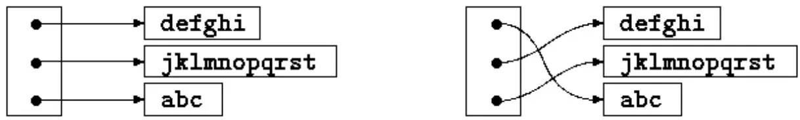
This eliminates the twin problems of complicated storage management and high overhead that would go with moving the lines themselves.
这就消除了两个随之而来的难题：复杂的存储管理，以及移动文本行本身所带来的巨大开销。
The sorting process has three steps:
排序过程有三个步骤：
read all the lines of input
sort them
print them in order
读入所有输入行、对它们排序、按顺序打印它们。
As usual, it's best to divide the program into functions that match this natural division, with the main routine controlling the other functions. Let us defer the sorting step for a moment, and concentrate on the data structure and the input and output.
像往常一样，最好按照这种自然划分把程序分解成若干函数，由主程序控制其他函数。我们先暂缓排序这一步，把注意力集中在数据结构和输入输出上。
The input routine has to collect and save the characters of each line, and build an array of pointers to the lines. It will also have to count the number of input lines, since that information is needed for sorting and printing. Since the input function can only cope with a finite number of input lines, it can return some illegal count like -1 if too much input is presented.
输入函数必须收集并保存每一行的字符，并构造一个指向这些行的指针数组。它还必须统计输入行的数目，因为排序和打印都需要这一信息。由于输入函数只能处理有限数目的输入行，如果输入行数过多，它可以返回某个非法的行数（如 -1）。
The output routine only has to print the lines in the order in which they appear in the array of pointers.
输出函数只需按照各行在指针数组中出现的顺序把它们打印出来即可。
#include <stdio.h>
#include <string.h>
#define MAXLINES 5000 /* max #lines to be sorted */
char *lineptr[MAXLINES]; /* pointers to text lines */
int readlines(char *lineptr[], int nlines);
void writelines(char *lineptr[], int nlines);
void qsort(char *lineptr[], int left, int right);
/* sort input lines */
main()
{
int nlines; /* number of input lines read */
if ((nlines = readlines(lineptr, MAXLINES)) >= 0) {
qsort(lineptr, 0, nlines-1);
writelines(lineptr, nlines);
return 0;
} else {
printf("error: input too big to sort\n");
return 1;
}
}
#define MAXLEN 1000 /* max length of any input line */
int getline(char *, int);
char *alloc(int);
/* readlines: read input lines */
int readlines(char *lineptr[], int maxlines)
{
int len, nlines;
char *p, line[MAXLEN];
nlines = 0;
while ((len = getline(line, MAXLEN)) > 0)
if (nlines >= maxlines || p = alloc(len) == NULL)
return -1;
else {
line[len-1] = '\0'; /* delete newline */
strcpy(p, line);
lineptr[nlines++] = p;
}
return nlines;
}
/* writelines: write output lines */
void writelines(char *lineptr[], int nlines)
{
int i;
for (i = 0; i < nlines; i++)
printf("%s\n", lineptr[i]);
}
The function getline is from Section 1.9.
The main new thing is the declaration for lineptr:
char *lineptr[MAXLINES];
says that lineptr is an array of MAXLINES elements, each element of which is a pointer to a char. That is, lineptr[i] is a character pointer, and *lineptr[i] is the character it points to, the first character of the i-th saved text line.
这里主要的新东西是 lineptr 的声明：
它说明 lineptr 是一个具有 MAXLINES 个元素的数组，其中每个元素是指向 char 类型的指针。也就是说，lineptr[i] 是一个字符指针，而 *lineptr[i] 是它所指向的字符，即保存下来的第 i 个文本行的首字符。
Since lineptr is itself the name of an array, it can be treated as a pointer in the same manner as in our earlier examples, and writelines can be written instead as
由于 lineptr 本身是数组名，它可以像前面的例子那样被当作指针处理，因此 writelines 也可以写成如下形式：
/* writelines: write output lines */
void writelines(char *lineptr[], int nlines)
{
while (nlines-- > 0)
printf("%s\n", *lineptr++);
}
Initially, *lineptr points to the first line; each element advances it to the next line pointer while nlines is counted down.
开始时，*lineptr 指向第一行；每累加一次该指针就使它指向下一行的指针，同时 nlines 递减计数。
With input and output under control, we can proceed to sorting. The quicksort from Chapter 4 needs minor changes: the declarations have to be modified, and the comparison operation must be done by calling strcmp. The algorithm remains the same, which gives us some confidence that it will still work.
输入输出问题解决之后，就可以着手排序了。第 4 章的快速排序需要稍作修改：声明必须修改，比较操作必须通过调用 strcmp 完成。算法本身保持不变，这让我们有信心它仍然能正确工作。
/* qsort: sort v[left]...v[right] into increasing order */
void qsort(char *v[], int left, int right)
{
int i, last;
void swap(char *v[], int i, int j);
if (left >= right) /* do nothing if array contains */
return; /* fewer than two elements */
swap(v, left, (left + right)/2);
last = left;
for (i = left+1; i <= right; i++)
if (strcmp(v[i], v[left]) < 0)
swap(v, ++last, i);
swap(v, left, last);
qsort(v, left, last-1);
qsort(v, last+1, right);
}
Similarly, the swap routine needs only trivial changes:
类似地，swap 函数也只需稍作修改：
/* swap: interchange v[i] and v[j] */
void swap(char *v[], int i, int j)
{
char *temp;
temp = v[i];
v[i] = v[j];
v[j] = temp;
}
Since any individual element of v (alias lineptr) is a character pointer, temp must be also, so one can be copied to the other.
由于 v（即 lineptr 的别名）的每个元素都是字符指针，temp 也必须是指针，这样它们之间才能相互复制。
Exercise 5-7. Rewrite readlines to store lines in an array supplied by main, rather than calling alloc to maintain storage. How much faster is the program?
练习 5-7. 改写 readlines，把各行存入由 main 提供的数组中，而不是调用 alloc 来分配存储。程序能快多少？
C provides rectangular multi-dimensional arrays, although in practice they are much less used than arrays of pointers. In this section, we will show some of their properties.
C 提供了矩形多维数组，尽管在实践中它们远不如指针数组常用。本节将展示多维数组的一些性质。
Consider the problem of date conversion, from day of the month to day of the year and vice versa. For example, March 1 is the 60th day of a non-leap year, and the 61st day of a leap year. Let us define two functions to do the conversions: day_of_year converts the month and day into the day of the year, and month_day converts the day of the year into the month and day. Since this latter function computes two values, the month and day arguments will be pointers:
考虑日期转换的问题：把某月中的某日转换为一年中的第几天，或者反之。例如，3 月 1 日是非闰年的第 60 天，闰年的第 61 天。我们定义两个函数来进行转换：day_of_year 把月和日转换为一年中的第几天，month_day 把一年中的第几天转换为月和日。由于后一个函数要计算两个值，月和日这两个参数将使用指针：
month_day(1988, 60, &m, &d)
sets m to 2 and d to 29 (February 29th).
调用后把 m 设为 2、d 设为 29（2 月 29 日）。
These functions both need the same information, a table of the number of days in each month ("thirty days hath September ..."). Since the number of days per month differs for leap years and non-leap years, it's easier to separate them into two rows of a two-dimensional array than to keep track of what happens to February during computation. The array and the functions for performing the transformations are as follows:
这两个函数都需要同样的信息：每个月天数的表（“九月有三十天……”）。由于闰年和非闰年每月的天数不同，把它们分成二维数组的两行，比在计算过程中跟踪二月份的天数变化更容易。该数组以及执行转换的函数如下：
static char daytab[2][13] = {
{0, 31, 28, 31, 30, 31, 30, 31, 31, 30, 31, 30, 31},
{0, 31, 29, 31, 30, 31, 30, 31, 31, 30, 31, 30, 31}
};
/* day_of_year: set day of year from month & day */
int day_of_year(int year, int month, int day)
{
int i, leap;
leap = year%4 == 0 && year%100 != 0 || year%400 == 0;
for (i = 1; i < month; i++)
day += daytab[leap][i];
return day;
}
/* month_day: set month, day from day of year */
void month_day(int year, int yearday, int *pmonth, int *pday)
{
int i, leap;
leap = year%4 == 0 && year%100 != 0 || year%400 == 0;
for (i = 1; yearday > daytab[leap][i]; i++)
yearday -= daytab[leap][i];
*pmonth = i;
*pday = yearday;
}
Recall that the arithmetic value of a logical expression, such as the one for leap, is either zero (false) or one (true), so it can be used as a subscript of the array daytab.
The array daytab has to be external to both day_of_year and month_day, so they can both use it. We made it char to illustrate a legitimate use of char for storing small non-character integers.
数组 daytab 必须是 day_of_year 和 month_day 都能访问的外部变量。我们把它声明为 char 类型，是为了说明用 char 存放小的非字符整数也是一种合法用法。
daytab is the first two-dimensional array we have dealt with. In C, a two-dimensional array is really a one-dimensional array, each of whose elements is an array. Hence subscripts are written as
daytab 是我们处理的第一个二维数组。在 C 中，二维数组实际上是一种一维数组，它的每个元素本身又是一个数组。因此下标要写成
daytab[i][j] /* [row][col] */
rather than
daytab[i,j] /* WRONG */
Other than this notational distinction, a two-dimensional array can be treated in much the same way as in other languages. Elements are stored by rows, so the rightmost subscript, or column, varies fastest as elements are accessed in storage order.
除了记法上的这点区别外，二维数组的使用方式与其他语言基本相同。元素按行存储，因此按存储顺序访问元素时，最右边的下标（即列）变化最快。
An array is initialized by a list of initializers in braces; each row of a two-dimensional array is initialized by a corresponding sub-list. We started the array daytab with a column of zero so that month numbers can run from the natural 1 to 12 instead of 0 to 11. Since space is not at a premium here, this is clearer than adjusting the indices.
数组用花括号中的初始值列表进行初始化；二维数组的每一行由对应的子列表初始化。我们让数组 daytab 的第 0 列为 0，这样月份号就可以自然地从 1 到 12，而不是 0 到 11。由于这里并不缺存储空间，这种做法比调整下标更清晰。
If a two-dimensional array is to be passed to a function, the parameter declaration in the function must include the number of columns; the number of rows is irrelevant, since what is passed is, as before, a pointer to an array of rows, where each row is an array of 13 ints. In this particular case, it is a pointer to objects that are arrays of 13 ints. Thus if the array daytab is to be passed to a function f, the declaration of f would be:
如果要把二维数组传给函数，函数的参数声明必须包含列数；行数则无关紧要，因为传递的仍然是一个指向行数组的指针，其中每行是一个具有 13 个 int 的数组。就本例而言，它是指向“由 13 个 int 组成的数组”这类对象的指针。因此，如果要把数组 daytab 传给函数 f，f 的声明应写成：
f(int daytab[2][13]) { ... }
It could also be
f(int daytab[][13]) { ... }
since the number of rows is irrelevant, or it could be
f(int (*daytab)[13]) { ... }
which says that the parameter is a pointer to an array of 13 integers. The parentheses are necessary since brackets [] have higher precedence than *. Without parentheses, the declaration
int *daytab[13]
is an array of 13 pointers to integers. More generally, only the first dimension (subscript) of an array is free; all the others have to be specified.
这种写法说明参数是指向“由 13 个 int 组成的数组”的指针。圆括号是必需的，因为 [] 的优先级高于 。如果没有圆括号，声明 int daytab[13] 的含义就变成了：一个包含 13 个指向 int 的指针的数组。更一般地说，只有数组的第一维（下标）可以省略，其余各维都必须明确写出。
Section 5.12 has a further discussion of complicated declarations.
5.12 节将进一步讨论复杂的声明。
Exercise 5-8. There is no error checking in day_of_year or month_day. Remedy this defect.
练习 5-8. day_of_year 和 month_day 中没有错误检查。请弥补这一缺陷。
Consider the problem of writing a function month_name(n), which returns a pointer to a character string containing the name of the n-th month. This is an ideal application for an internal static array. month_name contains a private array of character strings, and returns a pointer to the proper one when called. This section shows how that array of names is initialized.
考虑编写函数 month_name(n) 的问题：它返回一个指向字符串的指针，该字符串包含第 n 个月的名字。这是内部 static 数组的一个理想应用。month_name 中包含一个私有的字符串数组，被调用时返回指向正确字符串的指针。本节将说明如何初始化这个名字数组。
The syntax is similar to previous initializations:
其语法与前面见过的初始化类似：
/* month_name: return name of n-th month */
char *month_name(int n)
{
static char *name[] = {
"Illegal month",
"January", "February", "March",
"April", "May", "June",
"July", "August", "September",
"October", "November", "December"
};
return (n < 1 || n > 12) ? name[0] : name[n];
}
The declaration of name, which is an array of character pointers, is the same as lineptr in the sorting example. The initializer is a list of character strings; each is assigned to the corresponding position in the array. The characters of the i-th string are placed somewhere, and a pointer to them is stored in name[i]. Since the size of the array name is not specified, the compiler counts the initializers and fills in the correct number.
name 的声明是一个字符指针数组，与排序例子中的 lineptr 相同。初始值是一个字符串列表，每个字符串被赋给数组中对应的位置。第 i 个字符串的字符存放在某处，而指向它们的指针则存放在 name[i] 中。由于没有指明数组 name 的大小，编译器会对初始值进行计数并填入正确的数目。
Newcomers to C are sometimes confused about the difference between a two-dimensional array and an array of pointers, such as name in the example above. Given the definitions
C 的新手有时会搞不清二维数组和指针数组（如上例中的 name）之间的区别。给定如下定义：
int a[10][20];
int *b[10];
then a[3][4] and b[3][4] are both syntactically legal references to a single int. But a is a true two-dimensional array: 200 int-sized locations have been set aside, and the conventional rectangular subscript calculation 20 * row +col is used to find the element a[row,col]. For b, however, the definition only allocates 10 pointers and does not initialize them; initialization must be done explicitly, either statically or with code. Assuming that each element of b does point to a twenty-element array, then there will be 200 ints set aside, plus ten cells for the pointers. The important advantage of the pointer array is that the rows of the array may be of different lengths. That is, each element of b need not point to a twenty-element vector; some may point to two elements, some to fifty, and some to none at all.
a[3][4] 和 b[3][4] 在语法上都是合法地引用一个 int。但 a 是一个真正的二维数组：它分配了 200 个 int 大小的存储空间，并通过常规的矩形下标计算公式 20 * row + col 来定位元素 a[row, col]。而对于 b，定义只分配了 10 个指针且未对它们初始化；初始化必须显式进行，可以静态进行，也可以通过代码进行。假定 b 的每个元素都指向一个具有 20 个元素的数组，那么就会分配 200 个 int 的存储空间，外加 10 个指针单元。指针数组的重要优势在于：数组的各行长度可以不同。也就是说，b 的每个元素不必都指向一个 20 个元素的向量；有的可以指向 2 个元素，有的指向 50 个，有的则什么也不指向。
char *name[] = { "Illegal month", "Jan", "Feb", "Mar" };
Although we have phrased this discussion in terms of integers, by far the most frequent use of arrays of pointers is to store character strings of diverse lengths, as in the function month_name. Compare the declaration and picture for an array of pointers:
尽管我们的讨论是以整数为背景展开的，但指针数组最频繁的用途还是用来存放长度各不相同的字符串，就像函数 month_name 中那样。比较一下指针数组的声明和示意图：
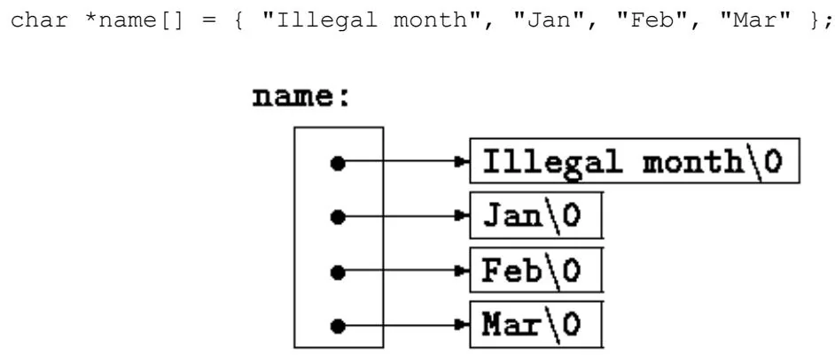
with those for a two-dimensional array:
以及二维数组的声明和示意图：
char aname[][15] = { "Illegal month", "Jan", "Feb", "Mar" };
aname:
Illegal month\0 Jan\0 Feb\0 Mar\0
0 15 30 45
Exercise 5-9. Rewrite the routines day_of_year and month_day with pointers instead of indexing.
练习 5-9. 用指针（而不是下标）改写 day_of_year 和 month_day 函数。
In environments that support C, there is a way to pass command-line arguments or parameters to a program when it begins executing. When main is called, it is called with two arguments. The first (conventionally called argc, for argument count) is the number of command-line arguments the program was invoked with; the second (argv, for argument vector) is a pointer to an array of character strings that contain the arguments, one per string. We customarily use multiple levels of pointers to manipulate these character strings.
在支持 C 的环境中，可以在程序开始执行时把命令行参数（或参数）传给程序。调用 main 函数时，它带有两个参数。第一个（习惯上称为 argc，即 argument count）是程序被调用时所带命令行参数的数目；第二个（argv，即 argument vector）是一个指针，指向包含这些参数的字符串数组，每个字符串对应一个参数。我们习惯上用多级指针来操纵这些字符串。
The simplest illustration is the program echo, which echoes its command-line arguments on a single line, separated by blanks. That is, the command
最简单的例子是程序 echo，它把命令行参数在一行中回显出来，参数之间用空格分隔。也就是说，命令
echo hello, world
prints the output
将打印出如下输出：
hello, world
By convention, argv[0] is the name by which the program was invoked, so argc is at least 1. If argc is 1, there are no command-line arguments after the program name. In the example above, argc is 3, and argv[0], argv[1], and argv[2] are "echo", "hello,", and "world" respectively. The first optional argument is argv[1] and the last is argv[argc-1]; additionally, the standard requires that argv[argc] be a null pointer.
按照惯例，argv[0] 是程序被调用时使用的名字，因此 argc 至少是 1。如果 argc 为 1，说明程序名后面没有命令行参数。在上面的例子中，argc 为 3，argv[0]、argv[1] 和 argv[2] 分别是 "echo"、"hello," 和 "world"。第一个可选参数是 argv[1]，最后一个是 argv[argc-1]；此外，标准还要求 argv[argc] 是一个空指针。
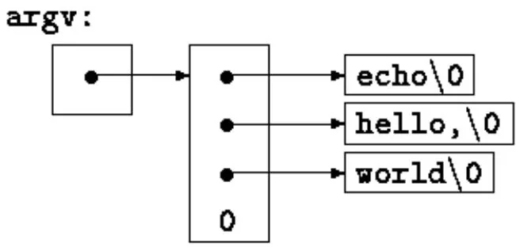
The first version of echo treats argv as an array of character pointers:
echo 的第一个版本把 argv 当作字符指针数组来处理：
#include <stdio.h>
/* echo command-line arguments; 1st version */
main(int argc, char *argv[])
{
int i;
for (i = 1; i < argc; i++)
printf("%s%s", argv[i], (i < argc - 1) ? " " : "");
printf("\n");
return 0;
}
Since argv is a pointer to an array of pointers, we can manipulate the pointer rather than index the array. This next variant is based on incrementing argv, which is a pointer to pointer to char, while argc is counted down:
由于 argv 是指向指针数组的指针，我们可以操纵指针本身而不是对数组建立索引。下面这个版本基于对 argv 的递增（argv 是指向 char 的指针的指针），同时对 argc 递减计数：
#include <stdio.h>
/* echo command-line arguments; 2nd version */
main(int argc, char *argv[])
{
while (--argc > 0)
printf("%s%s", *++argv, (argc > 1) ? " " : "");
printf("\n");
return 0;
}
Since argv is a pointer to the beginning of the array of argument strings, incrementing it by 1 (++argv) makes it point at the original argv[1] instead of argv[0]. Each successive increment moves it along to the next argument; *argv is then the pointer to that argument. At the same time, argc is decremented; when it becomes zero, there are no arguments left to print.
argv 初始时指向参数字符串数组的开头，把它加 1（++argv）就使它指向原来的 argv[1] 而不是 argv[0]。每次递增都使它移向下一个参数；此时 *argv 就是指向该参数的指针。与此同时，argc 递减；当它变为 0 时，就没有剩下需要打印的参数了。
Alternatively, we could write the printf statement as
或者，也可以把 printf 语句写成
printf((argc > 1) ? "%s " : "%s", *++argv);
This shows that the format argument of printf can be an expression too.
这表明 printf 的格式参数也可以是一个表达式。
As a second example, let us make some enhancements to the pattern-finding program from Section 4.1. If you recall, we wired the search pattern deep into the program, an obviously unsatisfactory arrangement. Following the lead of the UNIX program grep, let us enhance the program so the pattern to be matched is specified by the first argument on the command line.
作为第二个例子，我们对 4.1 节的模式查找程序作一些增强。如果读者还记得的话，当时我们把搜索模式硬编码进了程序内部，这显然不能令人满意。参照 UNIX 程序 grep 的做法，我们来增强该程序，让待匹配的模式由命令行的第一个参数指定。
#include <stdio.h>
#include <string.h>
#define MAXLINE 1000
int getline(char *line, int max);
/* find: print lines that match pattern from 1st arg */
main(int argc, char *argv[])
{
char line[MAXLINE];
int found = 0;
if (argc != 2)
printf("Usage: find pattern\n");
else
while (getline(line, MAXLINE) > 0)
if (strstr(line, argv[1]) != NULL) {
printf("%s", line);
found++;
}
return found;
}
The standard library function strstr(s,t) returns a pointer to the first occurrence of the string t in the string s, or NULL if there is none. It is declared in
标准库函数 strstr(s,t) 返回一个指针，指向字符串 t 在字符串 s 中首次出现的位置；如果 t 没有在 s 中出现，则返回 NULL。该函数声明在
The model can now be elaborated to illustrate further pointer constructions. Suppose we want to allow two optional arguments. One says "print all the lines except those that match the pattern;" the second says "precede each printed line by its line number."
现在可以对这个框架加以扩展，来说明进一步的指针构造。假设我们想允许两个可选参数：一个表示“打印除匹配行之外的所有行”；另一个表示“在打印的每行前面加上行号”。
A common convention for C programs on UNIX systems is that an argument that begins with a minus sign introduces an optional flag or parameter. If we choose -x (for "except") to signal the inversion, and -n ("number") to request line numbering, then the command
UNIX 系统上 C 程序的一个常见约定是：以减号开头的参数引入一个可选的标志或参数。如果我们选用 -x（表示 except，排除）来指定反选，用 -n（表示 number，行号）来要求显示行号，那么命令
find -x -n pattern
will print each line that doesn't match the pattern, preceded by its line number.
将打印出每个不匹配模式的行，并在行前面加上行号。
Optional arguments should be permitted in any order, and the rest of the program should be independent of the number of arguments that we present. Furthermore, it is convenient for users if option arguments can be combined, as in
可选参数应该允许以任意顺序出现，程序的其余部分也应与我们给出的参数数目无关。此外，如果选项参数可以合并书写，对用户会更方便，比如
find -nx pattern
Here is the program:
下面是程序：
#include <stdio.h>
#include <string.h>
#define MAXLINE 1000
int getline(char *line, int max);
/* find: print lines that match pattern from 1st arg */
main(int argc, char *argv[])
{
char line[MAXLINE];
long lineno = 0;
int c, except = 0, number = 0, found = 0;
while (--argc > 0 && (++argv)[0] == '-')
while (c = *++argv[0])
switch (c) {
case 'x':
except = 1;
break;
case 'n':
number = 1;
break;
default:
printf("find: illegal option %c\n", c);
argc = 0;
found = -1;
break;
}
if (argc != 1)
printf("Usage: find -x -n pattern\n");
else
while (getline(line, MAXLINE) > 0) {
lineno++;
if ((strstr(line, *argv) != NULL) != except) {
if (number)
printf("%ld:", lineno);
printf("%s", line);
found++;
}
}
return found;
}
argc is decremented and argv is incremented before each optional argument. At the end of the loop, if there are no errors, argc tells how many arguments remain unprocessed and argv points to the first of these. Thus argc should be 1 and argv should point at the pattern. Notice that ++argv is a pointer to an argument string, so (++argv)[0] is its first character. (An alternate valid form would be ++argv.) Because [] binds tighter than * and ++, the parentheses are necessary; without them the expression would be taken as ++(argv[0]). In fact, that is what we have used in the inner loop, where the task is to walk along a specific argument string. In the inner loop, the expression *++argv[0] increments the pointer argv[0]!
每遇到一个可选参数，argc 就递减、argv 就递增。如果循环结束时没有发生错误，argc 就说明了还剩下多少个参数未处理，而 argv 指向其中第一个。因此 argc 应为 1，argv 应指向模式。注意，++argv 是指向参数字符串的指针，所以 (++argv)[0] 是它的第一个字符（另一种等价写法是 ++argv）。因为 [] 的结合优先级高于 * 和 ++，所以圆括号是必需的；如果没有圆括号，表达式就会被理解为 ++(argv[0])。事实上，这正是我们在内层循环中使用的形式，那里的任务是沿着某个特定的参数字符串逐字符前进。在内层循环中，表达式 *++argv[0] 递增的是指针 argv[0]！
It is rare that one uses pointer expressions more complicated than these; in such cases, breaking them into two or three steps will be more intuitive.
很少有人会使用比这更复杂的指针表达式；遇到这种情况时，把它们拆成两三步来写会更直观。
Exercise 5-10. Write the program expr, which evaluates a reverse Polish expression from the command line, where each operator or operand is a separate argument. For example,
练习 5-10. 编写程序 expr，对命令行给出的逆波兰表达式求值，其中每个运算符或操作数都是单独一个参数。例如，命令
expr 2 3 4 + *
evaluates 2 * (3+4).
求出 2 * (3+4) 的值。
Exercise 5-11. Modify the program entab and detab (written as exercises in Chapter 1) to accept a list of tab stops as arguments. Use the default tab settings if there are no arguments.
练习 5-11. 修改第 1 章练习中的 entab 和 detab 程序，使它们接受一组制表位作为参数。如果没有给出参数，则使用默认的制表位设置。
Exercise 5-12. Extend entab and detab to accept the shorthand
练习 5-12. 扩展 entab 和 detab，使它们接受如下简写形式
entab -m +n
to mean tab stops every n columns, starting at column m. Choose convenient (for the user) default behavior.
表示从第 m 列开始、每 n 列一个制表位。请选择对用户方便的默认行为。
Exercise 5-13. Write the program tail, which prints the last n lines of its input. By default, n is set to 10, let us say, but it can be changed by an optional argument so that
练习 5-13. 编写程序 tail，打印其输入的最后 n 行。默认情况下 n 为 10，但可以通过一个可选参数加以改变，使得命令
tail -n
prints the last n lines. The program should behave rationally no matter how unreasonable the input or the value of n. Write the program so it makes the best use of available storage; lines should be stored as in the sorting program of Section 5.6, not in a two-dimensional array of fixed size.
打印最后 n 行。无论输入或 n 的值多么不合理，程序都应表现得合乎情理。编写程序时应充分利用可用的存储空间：各行应像 5.6 节的排序程序那样存储，而不是存放在大小固定的二维数组中。
In C, a function itself is not a variable, but it is possible to define pointers to functions, which can be assigned, placed in arrays, passed to functions, returned by functions, and so on. We will illustrate this by modifying the sorting procedure written earlier in this chapter so that if the optional argument -n is given, it will sort the input lines numerically instead of lexicographically.
在 C 中，函数本身不是变量，但可以定义指向函数的指针。这种指针可以被赋值、存放在数组中、传给函数、作为函数的返回值，等等。我们将通过修改本章前面编写的排序程序来说明这一点：如果给出可选参数 -n，它将按数值大小而不是按字典顺序对输入行排序。
A sort often consists of three parts - a comparison that determines the ordering of any pair of objects, an exchange that reverses their order, and a sorting algorithm that makes comparisons and exchanges until the objects are in order. The sorting algorithm is independent of the comparison and exchange operations, so by passing different comparison and exchange functions to it, we can arrange to sort by different criteria. This is the approach taken in our new sort.
排序通常由三部分组成：决定任意两个对象次序的比较、颠倒它们次序的交换，以及不断进行比较和交换直到所有对象都有序的排序算法。排序算法独立于比较和交换操作，因此通过向它传递不同的比较函数和交换函数，就可以按不同的准则进行排序。这就是我们新排序程序所采用的方法。
Lexicographic comparison of two lines is done by strcmp, as before; we will also need a routine numcmp that compares two lines on the basis of numeric value and returns the same kind of condition indication as strcmp does. These functions are declared ahead of main and a pointer to the appropriate one is passed to qsort. We have skimped on error processing for arguments, so as to concentrate on the main issues.
两行文本的字典序比较仍像从前一样由 strcmp 完成；我们还需要一个函数 numcmp，它按数值大小比较两行，并返回与 strcmp 同样类型的条件指示。这两个函数在 main 之前声明，指向相应函数的指针被传给 qsort。我们对参数的错误处理从简，以便把注意力集中在主要问题上。
#include <stdio.h>
#include <string.h>
#define MAXLINES 5000 /* max #lines to be sorted */
char *lineptr[MAXLINES]; /* pointers to text lines */
int readlines(char *lineptr[], int nlines);
void writelines(char *lineptr[], int nlines);
void qsort(void *lineptr[], int left, int right,
int (*comp)(void *, void *));
int numcmp(char *, char );
/* sort input lines */
main(int argc, char *argv[])
{
int nlines; /* number of input lines read */
int numeric = 0; /* 1 if numeric sort */
if (argc > 1 && strcmp(argv[1], "-n") == 0)
numeric = 1;
if ((nlines = readlines(lineptr, MAXLINES)) >= 0) {
qsort((void**) lineptr, 0, nlines-1,
(int (*)(void*, void*)) (numeric ? numcmp : strcmp));
writelines(lineptr, nlines);
return 0;
} else {
printf("input too big to sort\n");
return 1;
}
}
In the call to qsort, strcmp and numcmp are addresses of functions. Since they are known to be functions, the & is not necessary, in the same way that it is not needed before an array name.
在调用 qsort 时，strcmp 和 numcmp 是函数的地址。因为它们是已知的函数，所以不需要 & 运算符，就像数组名前不需要 & 一样。
We have written qsort so it can process any data type, not just character strings. As indicated by the function prototype, qsort expects an array of pointers, two integers, and a function with two pointer arguments. The generic pointer type void * is used for the pointer arguments. Any pointer can be cast to void * and back again without loss of information, so we can call qsort by casting arguments to void *. The elaborate cast of the function argument casts the arguments of the comparison function. These will generally have no effect on actual representation, but assure the compiler that all is well.
我们把 qsort 写成了可以处理任何数据类型（而不仅仅是字符串）的形式。如函数原型所示，qsort 需要一个指针数组、两个整数和一个带有两个指针参数的函数。指针参数使用了通用指针类型 void *。任何指针都可以转换为 void * 类型再转换回来而不丢失信息，因此可以通过把参数转换为 void * 来调用 qsort。对函数参数的复杂强制类型转换，是把比较函数的参数进行转换。这通常不会影响实际的表示方式，但可以让编译器相信一切正常。
/* qsort: sort v[left]...v[right] into increasing order */
void qsort(void *v[], int left, int right,
int (*comp)(void *, void *))
{
int i, last;
void swap(void *v[], int, int);
if (left >= right) /* do nothing if array contains */
return; /* fewer than two elements */
swap(v, left, (left + right)/2);
last = left;
for (i = left+1; i <= right; i++)
if ((*comp)(v[i], v[left]) < 0)
swap(v, ++last, i);
swap(v, left, last);
qsort(v, left, last-1, comp);
qsort(v, last+1, right, comp);
}
The declarations should be studied with some care. The fourth parameter of qsort is
这些声明需要仔细研究。qsort 的第四个参数是
int (*comp)(void *, void *)
which says that comp is a pointer to a function that has two void * arguments and returns an int.
它说明 comp 是一个指向函数的指针，该函数有两个 void * 类型的参数，返回类型为 int。
The use of comp in the line
在下面这行语句中 comp 的用法
if ((*comp)(v[i], v[left]) < 0)
is consistent with the declaration: comp is a pointer to a function, *comp is the function, and
与该声明是一致的：comp 是指向函数的指针，*comp 就是这个函数，而
(*comp)(v[i], v[left])
is the call to it. The parentheses are needed so the components are correctly associated; without them,
是对它的调用。圆括号是必需的，这样各组成部分才能正确结合；如果没有圆括号，
int *comp(void *, void *) /* WRONG */
says that comp is a function returning a pointer to an int, which is very different.
的意思就变成了 comp 是一个返回指向 int 的指针的函数，这就完全不同了。
We have already shown strcmp, which compares two strings. Here is numcmp, which compares two strings on a leading numeric value, computed by calling atof:
前面已经介绍过比较两个字符串的 strcmp。下面是 numcmp，它按字符串开头的数值比较两个字符串，数值通过调用 atof 计算：
#include <stdlib.h>
/* numcmp: compare s1 and s2 numerically */
int numcmp(char *s1, char *s2)
{
double v1, v2;
v1 = atof(s1);
v2 = atof(s2);
if (v1 < v2)
return -1;
else if (v1 > v2)
return 1;
else
return 0;
}
The swap function, which exchanges two pointers, is identical to what we presented earlier in the chapter, except that the declarations are changed to void *.
交换两个指针的 swap 函数与本章前面给出的相同，只是声明改成了 void * 类型。
void swap(void *v[], int i, int j)
{
void *temp;
temp = v[i];
v[i] = v[j];
v[j] = temp;
}
A variety of other options can be added to the sorting program; some make challenging exercises.
还可以给排序程序增加许多其他选项，其中一些可以作为有挑战性的练习。
Exercise 5-14. Modify the sort program to handle a -r flag, which indicates sorting in reverse (decreasing) order. Be sure that -r works with -n.
练习 5-14. 修改 sort 程序以处理 -r 标志，该标志表示按逆序（递减）排序。要确保 -r 可以和 -n 一起使用。
Exercise 5-15. Add the option -f to fold upper and lower case together, so that case distinctions are not made during sorting; for example, a and A compare equal.
练习 5-15. 增加选项 -f，把大小写合在一起处理，这样排序时就不区分大小写；例如 a 和 A 比较结果相等。
Exercise 5-16. Add the -d ("directory order") option, which makes comparisons only on letters, numbers and blanks. Make sure it works in conjunction with -f.
练习 5-16. 增加 -d（“目录顺序”）选项，使比较只在字母、数字和空格上进行。要确保它能与 -f 配合使用。
Exercise 5-17. Add a field-searching capability, so sorting may bee done on fields within lines, each field sorted according to an independent set of options. (The index for this book was sorted with -df for the index category and -n for the page numbers.)
练习 5-17. 增加字段搜索能力，使排序可以针对行内的字段进行，每个字段按照各自独立的一组选项排序。（本书的索引就是这样排序的：索引类别用 -df，页码用 -n。）
C is sometimes castigated for the syntax of its declarations, particularly ones that involve pointers to functions. The syntax is an attempt to make the declaration and the use agree; it works well for simple cases, but it can be confusing for the harder ones, because declarations cannot be read left to right, and because parentheses are over-used. The difference between
C 有时因声明的语法而受到批评，尤其是涉及函数指针的声明。这种语法试图让声明和使用的方式保持一致，对简单的情况效果很好，但对复杂的情况容易让人困惑，因为声明不能从左到右阅读，而且圆括号用得过多。对比一下
int *f(); /* f: function returning pointer to int */
and
int (*pf)(); /* pf: pointer to function returning int */
illustrates the problem: * is a prefix operator and it has lower precedence than (), so parentheses are necessary to force the proper association.
就可以说明问题所在：* 是前缀运算符，其优先级低于 ()，因此必须使用圆括号来强制正确的结合方式。
Although truly complicated declarations rarely arise in practice, it is important to know how to understand them, and, if necessary, how to create them. One good way to synthesize declarations is in small steps with typedef, which is discussed in Section 6.7. As an alternative, in this section we will present a pair of programs that convert from valid C to a word description and back again. The word description reads left to right.
虽然真正复杂的声明在实践中很少出现，但懂得如何理解它们，以及在必要时如何创建它们，是很重要的。合成声明的一种好办法是用 typedef 分小步进行，这将在 6.7 节讨论。作为另一种方法，本节将给出一对程序，用来把合法的 C 声明转换成文字描述，以及反向转换。这种文字描述是从左到右阅读的。
The first, dcl, is the more complex. It converts a C declaration into a word description, as in these examples:
第一个程序 dcl 更复杂一些。它把 C 声明转换成文字描述，例如：
char **argv
argv: pointer to char
int (*daytab)[13]
daytab: pointer to array[13] of int
int *daytab[13]
daytab: array[13] of pointer to int
void *comp()
comp: function returning pointer to void
void (*comp())
comp: pointer to function returning void
char (*(*x()))[])()
x: function returning pointer to array[] of
pointer to function returning char
char (*(*x[3])))[5]
x: array[3] of pointer to function returning
pointer to array[5] of char
dcl is based on the grammar that specifies a declarator, which is spelled out precisely in Appendix A, Section 8.5; this is a simplified form:
dcl 程序基于指定声明符（declarator）的文法，该文法在附录 A 的 8.5 节中有精确描述；下面是其简化形式：
dcl: optional * 's direct-dcl
direct-dcl name
(dcl)
direct-dcl()
direct-dcl [optional size]
In words, a dcl is a direct-dcl, perhaps preceded by *'s. A direct-dcl is a name, or a parenthesized dcl, or a direct-dcl followed by parentheses, or a direct-dcl followed by brackets with an optional size.
用文字来说，一个 dcl 就是一个 direct-dcl，前面可能带有若干个 *。而 direct-dcl 可以是一个名字、一个带圆括号的 dcl、一个后面跟有圆括号的 direct-dcl，或者一个后面跟有方括号（内含可选大小）的 direct-dcl。
This grammar can be used to parse functions. For instance, consider this declarator:
这个文法可以用来分析声明。例如，考虑下面这个声明符：
(*pfa[])()
pfa will be identified as a name and thus as a direct-dcl. Then pfa[] is also a direct-dcl. Then pfa[] is recognized as a dcl, so (pfa[]) is a direct-dcl. Then (*pfa[])() is a direct-dcl and thus a dcl. We can also illustrate the parse with a tree like this (where direct-dcl has been abbreviated to dir-dcl):
pfa 将被识别为一个名字，因而是一个 direct-dcl。接着 pfa[] 也是一个 direct-dcl。然后 pfa[] 被识别为一个 dcl，因此 (pfa[]) 是一个 direct-dcl。随后 (*pfa[])() 是一个 direct-dcl，因而也是一个 dcl。我们还可以用如下这样的树来图示这次分析（其中 direct-dcl 缩写为 dir-dcl）：
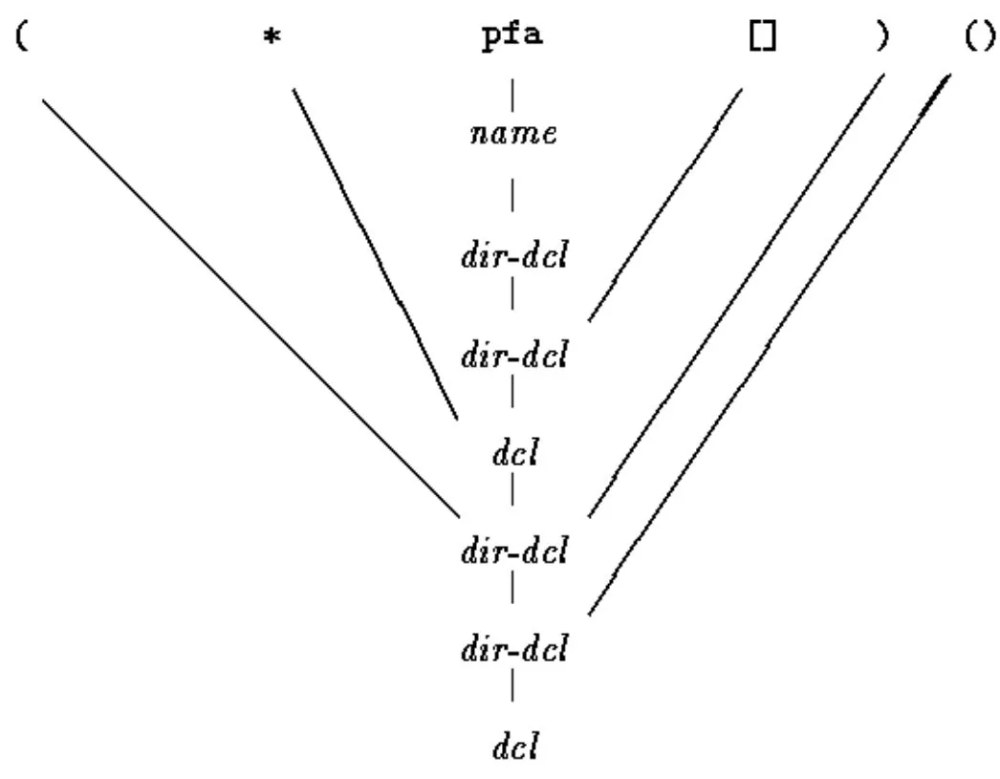
The heart of the dcl program is a pair of functions, dcl and dirdcl, that parse a declaration according to this grammar. Because the grammar is recursively defined, the functions call each other recursively as they recognize pieces of a declaration; the program is called a recursive-descent parser.
dcl 程序的核心是函数对 dcl 和 dirdcl，它们按照上述文法分析声明。由于文法是递归定义的，这两个函数在识别声明的各个部分时相互递归调用；这类程序被称为递归下降分析器。
/* dcl: parse a declarator */
void dcl(void)
{
int ns;
for (ns = 0; gettoken() == '*'; ) /* count * 's */
ns++;
dirdcl();
while (ns-- > 0)
strcat(out, " pointer to");
}
/* dirdcl: parse a direct declarator */
void dirdcl(void)
{
int type;
if (tokentype == '(') { /* (dcl) */
dcl();
if (tokentype != ')')
printf("error: missing)\n");
} else if (tokentype == NAME) /* variable name */
strcpy(name, token);
else
printf("error: expected name or (dcl)\n");
while ((type=gettoken()) == PARENS || type == BRACKETS)
if (type == PARENS)
strcat(out, " function returning");
else {
strcat(out, " array");
strcat(out, token);
strcat(out, " of");
}
}
Since the programs are intended to be illustrative, not bullet-proof, there are significant restrictions on dcl. It can only handle a simple data type line char or int. It does not handle argument types in functions, or qualifiers like const. Spurious blanks confuse it. It doesn't do much error recovery, so invalid declarations will also confuse it. These improvements are left as exercises.
这些程序只用于说明问题，并非无懈可击，因此 dcl 有许多限制。它只能处理 char 或 int 这类简单数据类型。它不能处理函数中的参数类型，也不能处理 const 之类的限定符。多余的空格会让它无所适从。它几乎没有错误恢复能力，因此非法声明同样会让它不知所措。这些改进留作练习。
Here are the global variables and the main routine:
下面是全局变量和主程序：
#include <stdio.h>
#include <string.h>
#include <ctype.h>
#define MAXTOKEN 100
enum { NAME, PARENS, BRACKETS };
void dcl(void);
void dirdcl(void);
int gettoken(void);
int tokentype; /* type of last token */
char token[MAXTOKEN]; /* last token string */
char name[MAXTOKEN]; /* identifier name */
char datatype[MAXTOKEN]; /* data type = char, int, etc. */
char out[1000];
main() /* convert declaration to words */
{
while (gettoken() != EOF) { /* 1st token on line */
strcpy(datatype, token); /* is the datatype */
out[0] = '\0';
dcl(); /* parse rest of line */
if (tokentype != '\n')
printf("syntax error\n");
printf("%s: %s %s\n", name, out, datatype);
}
return 0;
}
The function gettoken skips blanks and tabs, then finds the next token in the input; a "token" is a name, a pair of parentheses, a pair of brackets perhaps including a number, or any other single character.
函数 gettoken 跳过空格和制表符，然后在输入中寻找下一个记号（token）；所谓“记号”可以是一个名字、一对圆括号、一对可能包含数字的方括号，或者其他任何单个字符。
int gettoken(void) /* return next token */
{
int c, getch(void);
void ungetch(int);
char *p = token;
while ((c = getch()) == ' ' || c == '\t')
;
if (c == '(') {
if ((c = getch()) == ')') {
strcpy(token, "()");
return tokentype = PARENS;
} else {
ungetch(c);
return tokentype = '(';
}
} else if (c == '[') {
for (*p++ = c; (*p++ = getch()) != ']'; )
;
*p = '\0';
return tokentype = BRACKETS;
} else if (isalpha(c)) {
for (*p++ = c; isalnum(c = getch()); )
*p++ = c;
*p = '\0';
ungetch(c);
return tokentype = NAME;
} else
return tokentype = c;
}
getch and ungetch are discussed in Chapter 4.
getch 和 ungetch 在第 4 章中已经讨论过。
Going in the other direction is easier, especially if we do not worry about generating redundant parentheses. The program undcl converts a word description like "x is a function returning a pointer to an array of pointers to functions returning char," which we will express as
反方向的处理则简单一些，尤其是当我们不必担心生成多余的圆括号时。程序 undcl 把像“x 是一个函数，返回一个指针，指向由指针组成的数组，数组元素指向返回 char 的函数”这样的文字描述——我们把它表示为
x () * [ ] * () char
to
char (*(*x())[])()
——转换成
这样的声明。简写的输入语法使我们可以复用 gettoken 函数。undcl 还使用了与 dcl 相同的外部变量。
/* undcl: convert word descriptions to declarations */
main()
{
int type;
char temp[MAXTOKEN];
while (gettoken() != EOF) {
strcpy(out, token);
while ((type = gettoken()) != '\n')
if (type == PARENS || type == BRACKETS)
strcat(out, token);
else if (type == '*') {
sprintf(temp, "(*%s)", out);
strcpy(out, temp);
} else if (type == NAME) {
sprintf(temp, "%s %s", token, out);
strcpy(out, temp);
} else
printf("invalid input at %s\n", token);
}
return 0;
}
Exercise 5-18. Make dcl recover from input errors.
练习 5-18. 让 dcl 能从输入错误中恢复。
Exercise 5-19. Modify undcl so that it does not add redundant parentheses to declarations.
练习 5-19. 修改 undcl，使它不给声明添加多余的圆括号。
Exercise 5-20. Expand dcl to handle declarations with function argument types, qualifiers like const, and so on.
练习 5-20. 扩展 dcl，使它能处理带函数参数类型和 const 之类限定符的声明。